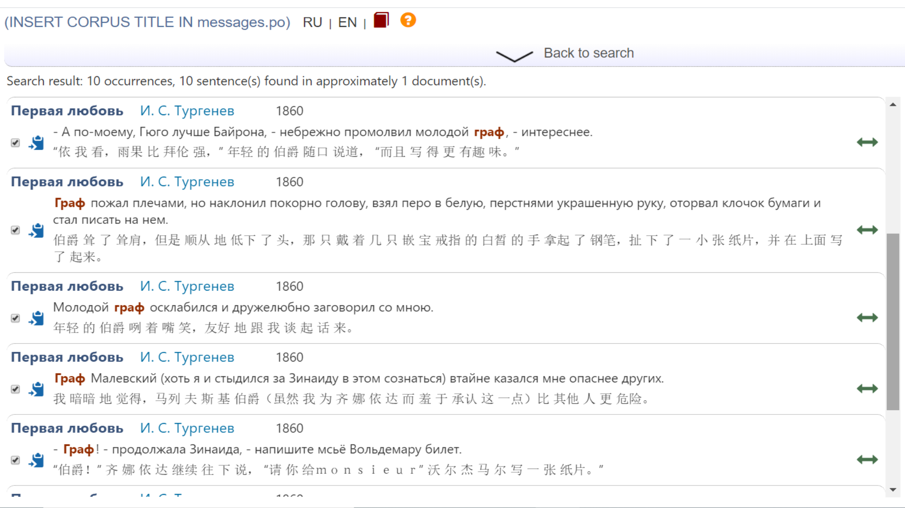

Kirill Semenov (HSE – Moscow)
Sonia Durneva (HSE – Moscow)
Yulia Kuznetsova (MSU – Moscow)
The Russian-Chinese Parallel Corpus of Ruscorpora: Achievements and Challenges
Keywords: parallel corpora, Russian, Chinese, translation studies, NLP
Nowadays, there is a number of parallel Russian-Chinese corpora available online (such as OPUS project: http://opus.nlpl.eu/); some are of substantial size, however, none provide PoS-tagging, meta-information of the contents and Chinese transcription (pinyin) at the same time. According to our information, the Russian-Chinese parallel corpus of Ruscorpora (henceforth — RCPC) is the only example of Russian-Chinese corpus with both thorough linguistic marking of the texts (all the tokens are tagged, all the texts are provided with thorough meta-information) and a user-friendly search interface. It was created in 2015 and has been under continuous development since then (Sitchinava 2015). The corpus now contains 10 text samples of approximately 176,000 words in Russian, all the texts are Russian and Chinese classical fiction written in XIX and XX centuries. The source language of the texts is either Russian or Chinese. Corpus is to be expanded to 621,000 words with another 12 texts soon. Moreover, around 70 more texts are now being prepared. Corpus is available at https://linghub.ru/rnc_parallel_chinese/search and http://www.ruscorpora.ru/old/search-para-zh.html
Our parallel corpus consists of various documents in XML format, each of them consists of the aligned three-language files (sentences in Russian, sentences in Chinese script and sentences in pinyin — the official Chinese transcription) and detailed meta-information. Each word in Russian sentences is provided with grammemes and its lemma, each word in Chinese sentences — with pinyin and English translation). Thus, the user can both select a required subcorpus and search over word forms, lemmas or grammemes in both languages (in Chinese — by characters and by pinyin).
Here is search result for word граф (‘count’):

As we are working on the integration of two other Russian-Chinese corpora into RCPC, research works made on their basis should also be mentioned. The first one is the Russian-Chinese corpus made by Y. Tao and V. P. Zakharov; in 2015-2017 authors published a paper on development of corpus (Tao, Zakharov, 2015) as well as a number of articles on the “foreignization” phenomenon in modern Chinese, such as (Tao, Zakharov, 2017). Another one is the Russian-English-Chinese corpus of business letters and foreign trade documents made by K. Ul’yanova, who also published a paper on the development of this corpus (Ul’yanova , 2019).
Currently, the corpus is facing two challenges — firstly significant increase in number and variety of texts, and secondly customization of the interface. As for the first problem, we aim at collecting newspaper articles, religious texts and user guides in the two languages. Moreover, we seek to find texts in different standard versions of Mandarin Chinese — not only Putonghua (accepted in PRC) but also in several varieties of Guoyu (accepted in Hong Kong, Taiwan etc.). As for the second problem, we are planning to enhance the search and subcorpus features and to create customized interfaces for non-linguist users and for Chinese-speaking users.
References:
Sitchinava 2015 - Д.В. Сичинава. Параллельные тексты в составе Национального корпуса русского языка: новые направления развития и результаты // Труды Института русского языка РАН, 2015. № 6. 194—235.
Tao, Zakharov 2015 - Tao, Y., Zakharov, V. P. The development and use of Russian-Chinese parallel corpus // Automatic Documentation and Mathematical Linguistics, Vol. 49, No. 2, 2015, 65-75.
Tao, Zakharov 2017 - Тао Ю., Захаров В.П. Корпусно-ориентированный анализ универсалии «иностранизация» в конструкциях с предлогом “对” (‘duì’) в текстах, переведенных с русского языка на китайский / Вестник СПбГУ. Сер. 13. 2017.
Ul’yanova 2019 - К. А. Ульянова. Исследование делового китайского языка: создание параллельного корпуса деловой корреспонденции и внешнеторговой документации на китайском, английском и русском языках // Магия ИННО: интегративные тенденции в лингвистике и лингводидактике : сборник научных трудов. – В 2 Т. – Т. 2 / под ред. Е. Б. Морозовой. – М.: МГИМО-Университет, 2019. – С. 262-269.